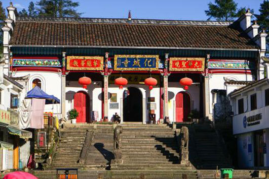
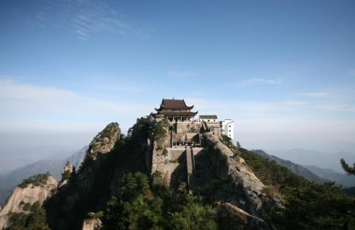
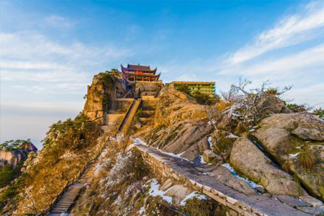
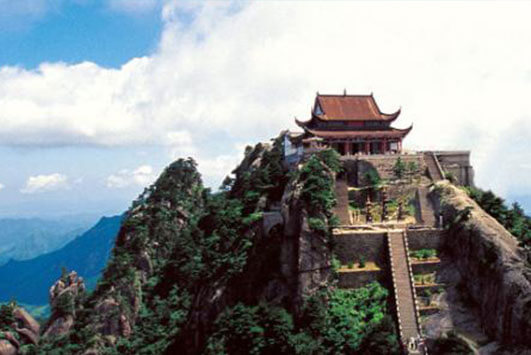
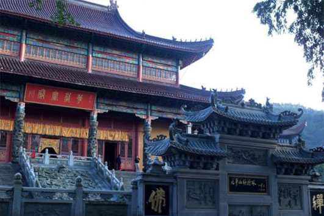
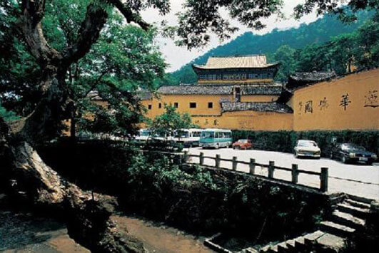
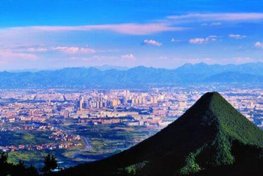
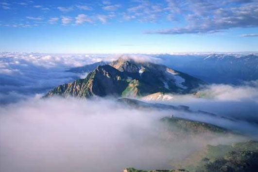

morly旅游网
九华山，古称陵阳山、九子山，为“中国佛教四大名山”之一，位于安徽省池州市青阳县境内，素有“东南第一山”之称。九华山主要有九十九峰，北俯长江，南望黄山，东临太平湖，西接池阳，绵亘一百余公里。九华山自山麓至天台峰，名刹古寺林立，文物古迹众多，尚存化城寺、月身宝殿、慧居寺、百岁宫等古刹78座，佛像1500余尊，藏有明万历皇帝颁赐的圣旨、藏经及其它玉印、法器等文物1300余件。
九华山历史悠久，文化深厚，主要有道教文化和佛教文化。九华山曾是是上古学仙修道圣地之一，据典籍所记载，最早在九华山进行宗教活动的就是道教，因此九华山不少地名也都与这些道教人物和传说有关。九华山佛教是佛教徒弘通世俗，导化、融合儒道的产物，九华山就是释儒道互动下形成的佛化自然。九华山千百年来承载着民间对地藏精神的信仰，这种信仰及其活动又繁衍了特定的九华山的文化。九华山景色秀丽，吸引了许多名人志士前来游玩，也因此留下了许多诗词歌赋，据记载九华山自晋唐起，存有历代名人雅士的诗词歌赋500多篇。李白曾三次游历九华山，写下了“昔在九江上，遥望九华峰，天江挂绿水，秀出九芙蓉”的美妙诗句，传说九华山就是因此而改名为九华山。九华山也有许多轶闻传说，其中比较知名传说有‘闵公施地’和‘娘娘塔井’。想知道的小伙伴可以去找一下相关记载哦。
九华山的山峰众多，但形状又各有其特点。主要有天柱峰、莲台峰、芙蓉峰、插霄峰、十王峰、天台峰和罗汉峰。天柱峰位于青峭湾西北周边群峰环拱，峰顶多人形奇石，南侧有峰名”响石崂”，据说每当雨天就会发出奇妙的响声。莲台峰峰顶莲台巨石周围环绕着”九瓣莲花”，五大磐石高叠成峰，峰腰悬石错列，架空成洞。芙蓉峰石色青紫，状如莲花。插霄峰峻峭高耸，两侧悬崖孤削。十王峰为九华山第一高峰，峰上植被繁茂，有许多珍惜动物。天台峰为九华山第三高峰，封顶有天台禅寺。罗汉峰因其山体抗风化、流水冲蚀能力强形成了独特的浑圆顶状的山峰。
九华山除了各有特色的山峰外，还有许多好玩的景点，有佛缘流长的天台寺、有九华山开山祖寺的化城寺、有殿中有塔，以殿护塔的肉身宝殿、有宫殿式特色建筑的祗园寺，有前傍古道，后接悬崖，东西均为绝壁的观音峰上院等。九华山以其峰多、石怪、文化深厚等特色，古往今来吸引了许多人前往。大家在空闲时刻，可以去九华山走一走、看一看，去感受它美丽风景和独特的气息。
景区门票
普通票：160元 优惠票：80元
1、免票优惠群体：对6周岁（含6周岁）以下或身高1.2 米（含1.2米）以下儿童、现役军人、军队离退休干部、65周岁以上（含65周岁）老年人、残疾人、僧尼、全国劳动模范、全国道德模范、记者、持有“国家摄影家协会及安徽省摄影家协会”颁发的摄影家协会会员证本人、集体参观爱国主义教育基地的大中小学学生、持“池州绿卡”本人等特定人群。
2、半票优惠群体：6周岁（不含6周岁）-18周岁（含18周岁）未成年人、全日制大学本科及以下学历学生、60周岁-65周岁（不含65周岁）老年人、皈依弟子（本人持由九华山风景区宗教局监制、九华山佛教协会及景区内各寺庙联合颁发的皈依证）、低保群体、省级劳动模范、省级道德模范，教师。
化城寺
化城寺建于高山盆地，南对芙蓉峰，北倚白云山，东邻东崖，西接神光领岭，四面环绕如城，为四进院落式建筑。
 天台寺
天台寺又名“地藏寺“、“地藏禅寺”，位于九华山的天台峰顶，海拔1306米，为九华山位置最高的寺院。
 祗园寺
祗园寺位于九华山东崖西麓的迎仙桥东，为九华山四大丛林（祗园、东崖、百岁、甘露）之首，始建于明嘉靖年间，原名“祗树庵”。
 芙蓉峰
芙蓉峰又名华山西峰，莲花峰，海拔900米，芙蓉峰北起九华之首，上、中、下三座莲花峰，连绵拔起，石色青紫，状如莲花。
 内容整理至网络，如有侵权，请联系我们！1255394075@qq.com